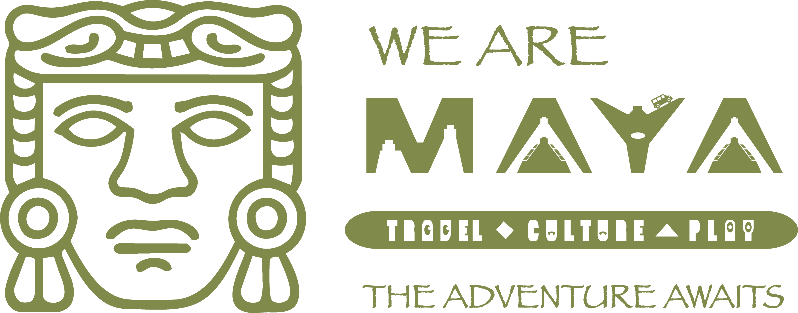

01
01Campeche / The forest calls
Think bigger.
Feel smaller.
A forest stretching to the horizon. Architecture that asks you to pause. Calakmul gives us a starting point for a different kind of exploration.
Where we go from here ↗ somosmayaMEXICO. ANOTHER PERSPECTIVE.Explore the region ↗
somosmayaMEXICO. ANOTHER PERSPECTIVE.Explore the region ↗Ancient roots. Open horizons.
20° N / 90° W · SOUTHEASTERN MEXICOGo for the places.
Stay for the perspective.

TRAVEL / CULTURE / CONNECTION01 — Pick a direction
Start with a place. Make space for everything it might teach you.
01Campeche / The forest calls
A forest stretching to the horizon. Architecture that asks you to pause. Calakmul gives us a starting point for a different kind of exploration.
Where we go from here ↗Chiapas / Make room for discovery
We’re imagining journeys with time to listen, to learn, and to understand a place beyond a first impression. Chiapas is part of that unfolding story.
Where we go from here ↗Tabasco / A new starting point
There’s more than one way into the southeast. Tabasco invites us to widen the frame and make space for the places we haven’t explored yet.
Where we go from here ↗Yucatán / Stories in every direction
Look for the connections between the past and everyday life. We want to travel with the curiosity and care that those stories deserve.
Where we go from here ↗Quintana Roo / Another perspective
Familiar names can hold unfamiliar stories. Let’s look beyond the expected, with time for the people and places that make a journey matter.
Where we go from here ↗02 — The SomosMaya spirit
It began with friends and family. It’s growing into an invitation: experience southeastern Mexico with curiosity, respect, and a sense of possibility.
03 — Work in progress. Wonder in abundance.
New journeys are in the making.
Dates and details are still to come.